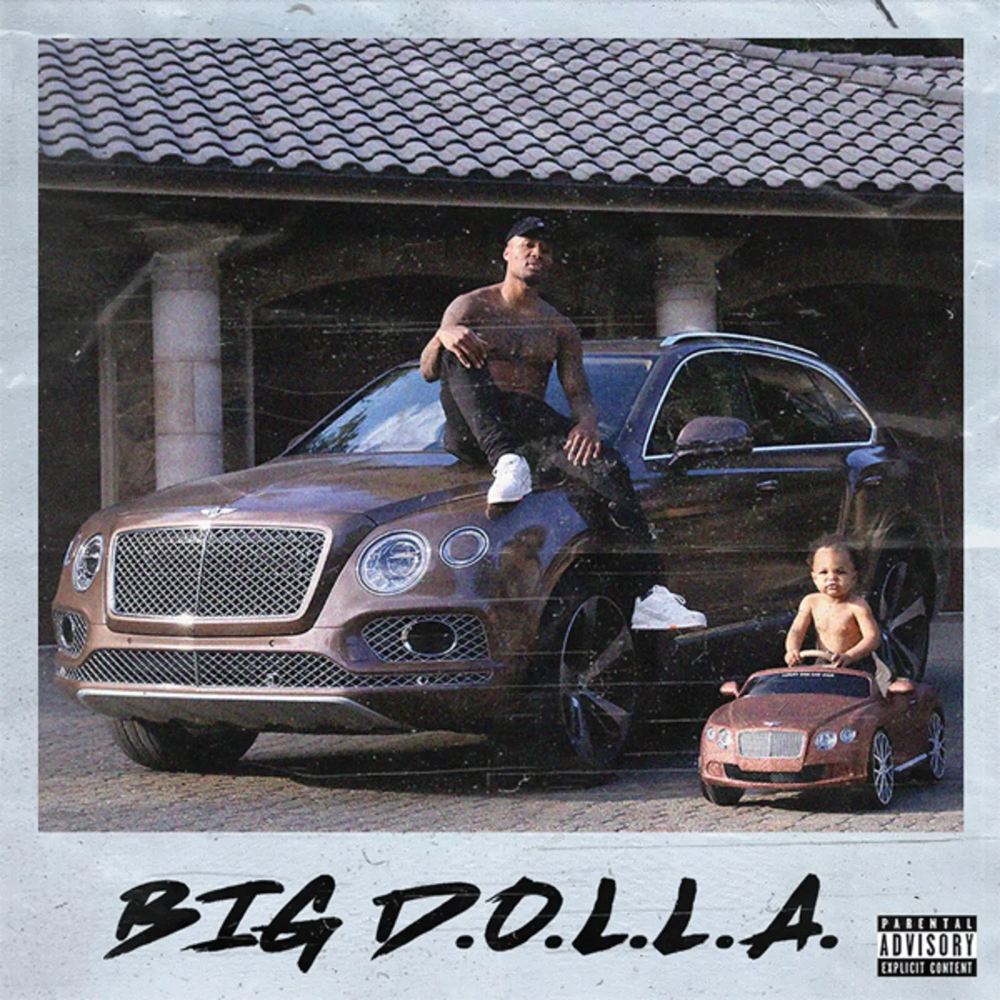

Lillard is a hip-hop artist and rapper by the name of Dame D.O.L.L.A., which stands for Different On Levels the Lord Allows. He began rapping mainly to hang out in the car of his cousin Eugene "Baby" Vasquez, who moved to Oakland from New York City in the early 1990s. Another big influence on Lillard's rapping was his cousin Brookfield Duece, who had some success in the Oakland rap scene.
He started a social media trend called "Four Bar Friday" in which he, and anyone who chooses to participate, submits a video of themselves rapping a small verse on Instagram every Friday with the hashtag #4BarFriday. In July 2015, he released his first full length single, "Soldier in the Game", via the online music streaming site SoundCloud. On October 21, 2016, Lillard released his debut album The Letter O. On October 6, 2017, Lillard released his second album Confirmed. Lillard released his third album, Big D.O.L.L.A. on August 9, 2019, featuring guests Lil Wayne, Mozzy, and Jeremih. He now has his own record label, Front Page Music, which includes Brookfield Duece in its roster. Lillard's non-album single "Kobe", which was released in September 2020 and features Snoop Dogg and Derrick Milano, is part of the soundtrack for NBA 2K21.